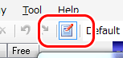
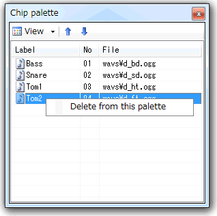

| Advanced operations |
|---|
| Chip palet |
Chip palette is a kind of "chip picker" made as a floating window. It's very useful if you register frequency-used chips to it.
Click
 in the toolbar or click [View(V)] - [Chip palette(P)] to show/hide the chip palette.
in the toolbar or click [View(V)] - [Chip palette(P)] to show/hide the chip palette.

Drag&drop the chip what you'd like to register to the chip palette.
1. Select the chip you'd like to delete and do right click to show context menu.
2. Select [Delete from the palette(D)].
